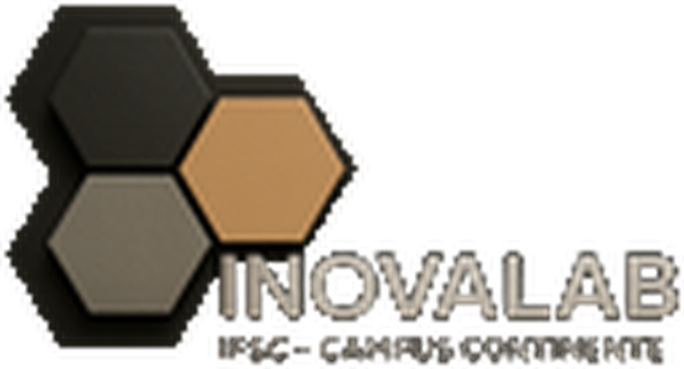
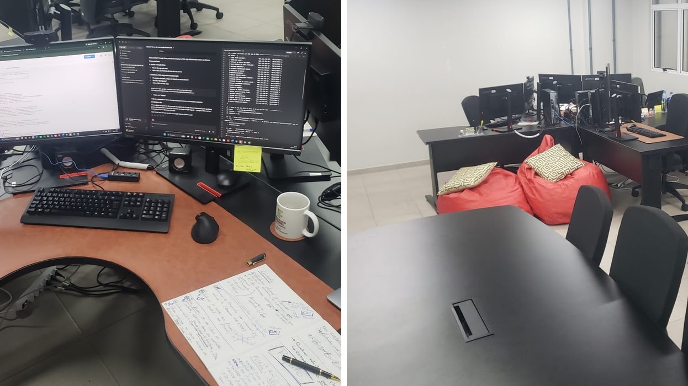
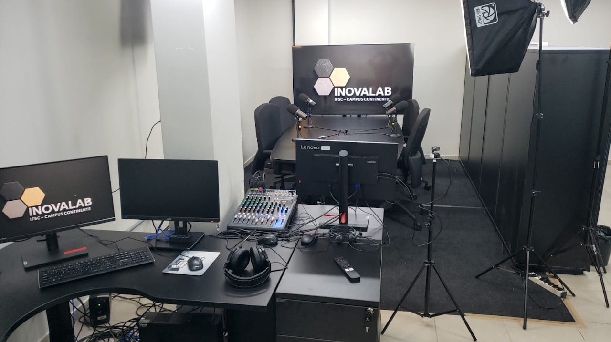
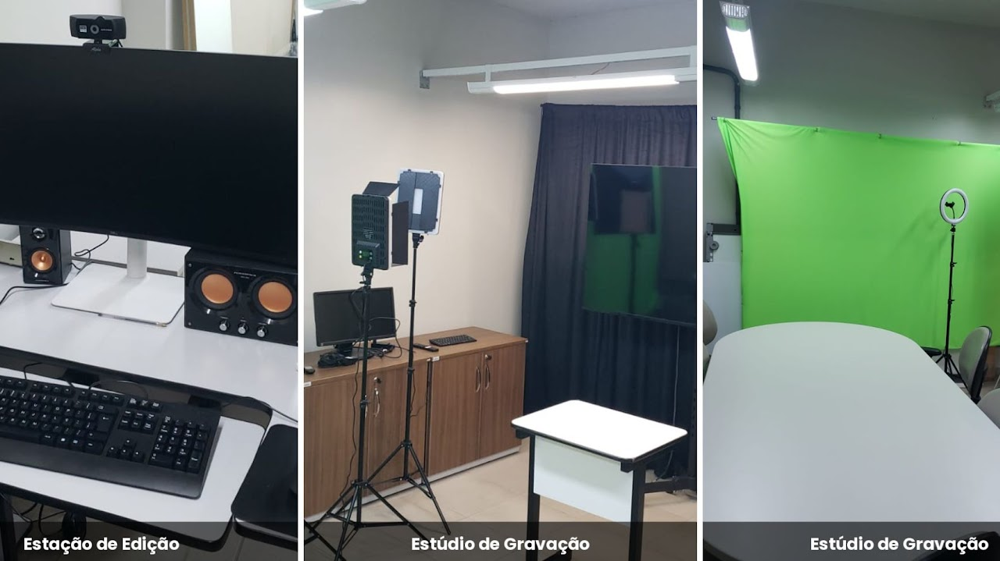
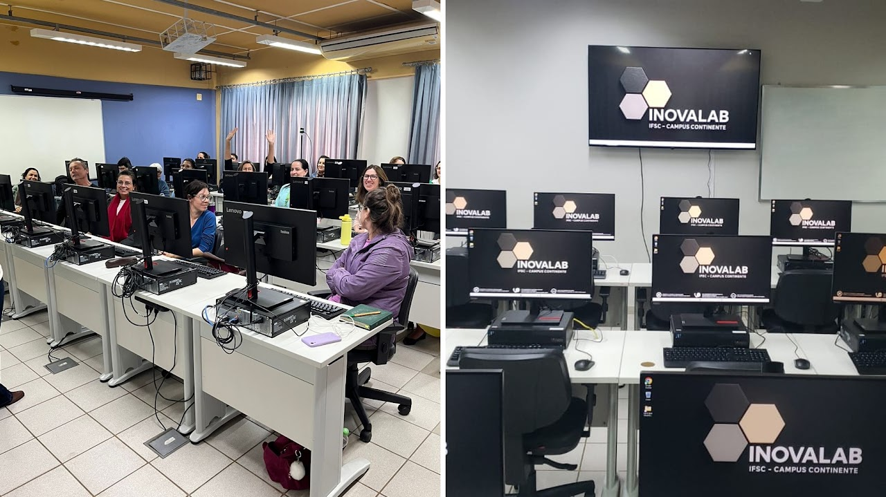
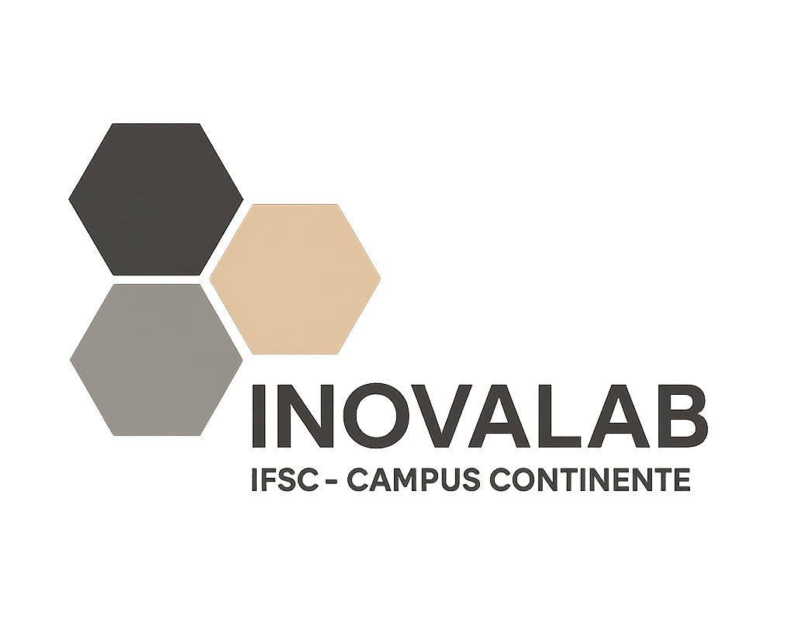

Experimentação
Núcleo de Experimentação Tecnológica
Um espaço dinâmico dedicado à exploração prática de tecnologias emergentes, onde estudantes e servidores transformam conceitos digitais em projetos reais.

Laboratório de Inovação e Mídias Digitais
Tecnologia, criatividade e colaboração para transformar práticas pedagógicas e produzir experiências digitais de alto impacto.

Infraestrutura
Ambientes especializados que apoiam projetos inovadores, produção de conteúdo digital, capacitação e experimentação tecnológica.
Um espaço dinâmico dedicado à exploração prática de tecnologias emergentes, onde estudantes e servidores transformam conceitos digitais em projetos reais.

Ambiente projetado para gravações de áudio e vídeo com qualidade profissional, ideal para entrevistas, programas e materiais didáticos.

Câmeras de alta resolução, iluminação, microfones e estrutura para produções audiovisuais, transmissões ao vivo, eventos e aulas online.

Infraestrutura de alta performance para treinamentos, oficinas e unidades curriculares com edição de vídeo, imagem e som.

Espaço dedicado a reuniões, aulas online e eventos virtuais, com recursos para uma comunicação digital clara e eficiente.
Agendamentos
Todas as solicitações devem ser iniciadas pela plataforma oficial. Escolha o espaço e consulte a disponibilidade.
Antes de reservar
Estúdio, Webconferência e Podcast/Videocast devem ser solicitados com no mínimo 48 horas de antecedência e por até 4 horas consecutivas ao dia.
Reserva integral das 21 estações, com antecedência máxima de 7 dias. Toda solicitação passa por análise da coordenação e pode ser remanejada por prioridade acadêmica.
Exige solicitação formal, justificativa, aprovação e assinatura de Termo de Responsabilidade. Retirada e devolução incluem inspeção conjunta.
O Laboratório de Mídias Digitais prioriza unidades curriculares, treinamentos, capacitações e oficinas que exijam infraestrutura de alto desempenho para edição de vídeo, som e imagem.
Não são reservadas estações individuais. A capacidade máxima é de 21 participantes e uma mesma atividade pode ocupar o espaço por até uma semana contínua.
Solicitações gerais não podem bloquear o laboratório durante todo o semestre. A coordenação pode realizar alocações extensas para unidades curriculares e capacitações prioritárias previstas no planejamento.
O solicitante assume a custódia, guarda e integridade do bem durante o empréstimo. A devolução deve ocorrer no prazo acordado e nas mesmas condições verificadas na retirada.
Nossa razão de existir
O INOVALAB é o Laboratório de Inovação e Mídias Digitais do IFSC Câmpus Florianópolis-Continente. Mais do que um laboratório, é um ecossistema dedicado à criatividade, à experimentação e à excelência na educação.
Fomentamos inovação pedagógica, produção de conteúdo digital, capacitação continuada e uma cultura colaborativa. Nossas atividades incluem consultoria interna, mentoria em design educacional, oficinas, seminários, palestras, produção de vídeos, lives e podcasts.
“Um espaço concebido para integrar ensino, pesquisa e extensão, fortalecendo competências tecnológicas em toda a comunidade acadêmica.”Conheça a história do INOVALAB ↗
Venha nos visitar